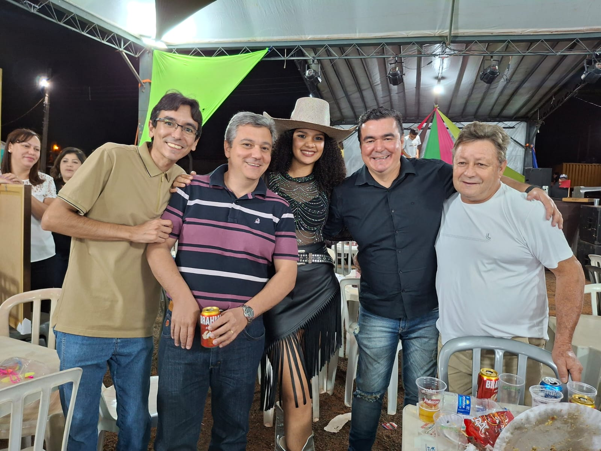
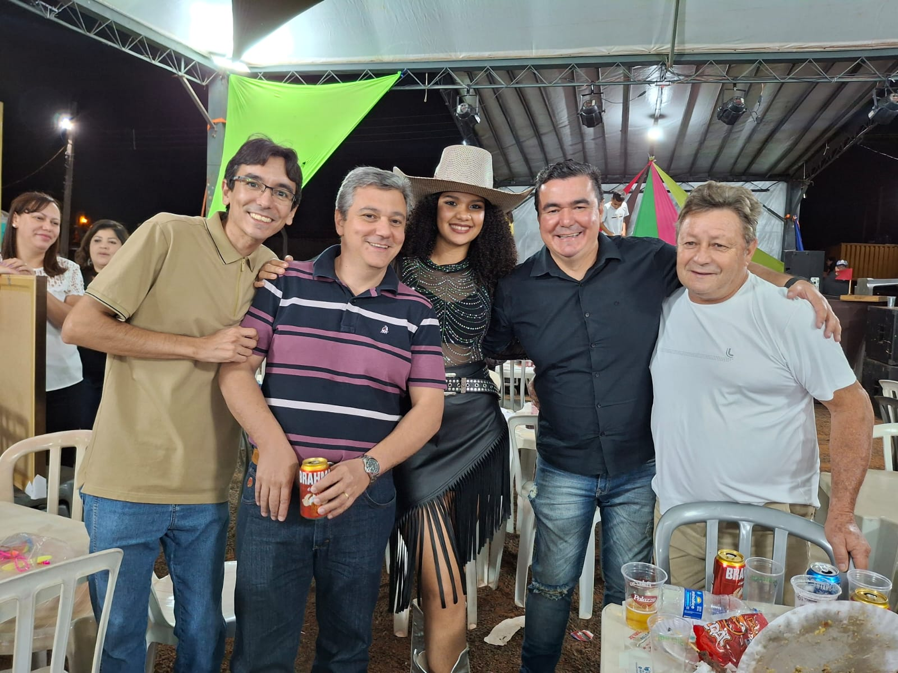

MARIA ARAUJO
Cantora
Cantora
Maria Araújo é uma jovem cantora com uma voz marcante e presença de palco cativante. Apaixonada pela música desde cedo, ela agora busca transformar sua paixão em profissão e conquistar seu espaço no cenário musical.
 

Escolher Maria Araújo para cantar é apostar em uma voz única e envolvente que conquista qualquer público. Sua habilidade vocal, combinada com uma presença de palco cativante. Com dedicação e paixão pela música, ela é a escolha perfeita para quem busca uma artista que vai deixar todos encantados pelo seu talento.
Dominio em multiplos gêneros:MPB, sertanejo, pagode, samba e música internacinal
Habilidade de envolver e conectar a plateia de todos os modos
Show dinâmico que combinam com um vocal impecável com presença de palco marcante
Amor verdadeiro pela música que se traduz em cada perfomance e em cada nota
"Não é apenas sobre cantar bem. É sobre criar momentos mágicos que ficam gravados na memória. Cada show terá um sentimento único. Maria não entrega apenas uma performance; ela oferece uma experiência transformadora."
Está sempre disponível para discutir oportunidades. Seja para um evento íntimo ou uma celebração, converse com ela para criar uma experiência inesquecível
+55 (16) 99110-1797